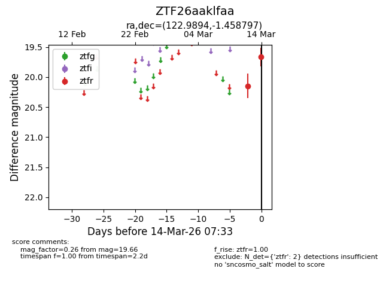
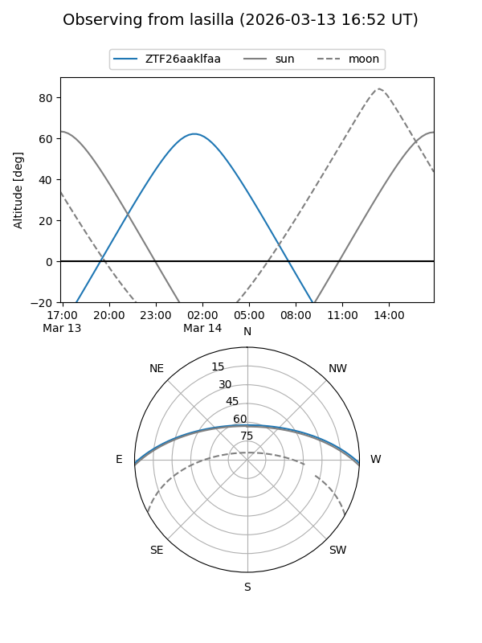
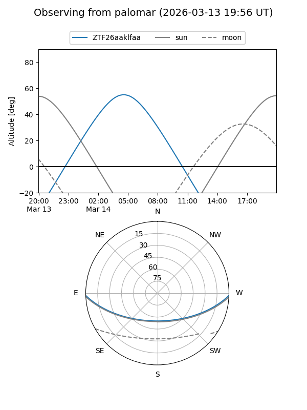

ZTF26aaklfaa
Target ZTF26aaklfaa at 2026-03-14 07:35
Aliases and brokers:
FINK: link
Lasair: link
ALeRCE: link
alt names
ZTF26aaklfaa (ztf,fink_ztf)
Coordinates:
equatorial (ra, dec) = 122.9894,-1.45880
equatorial (HMS+DMS) = 08:11:57.45,-01:27:31.67
galactic (l, b) = (223.7604,+17.13244)
Flags:
Photometry:
last ztfr=19.66
2 ztfr detections
Lightcurve

Visibility


Additional plots